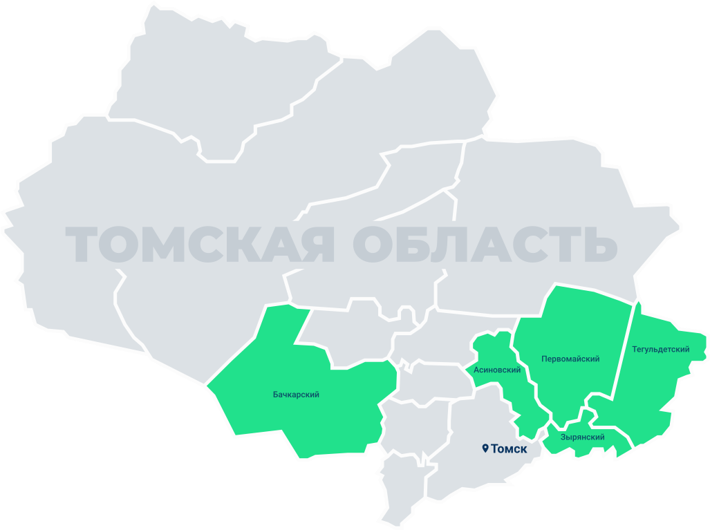
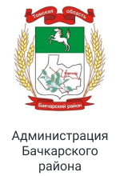
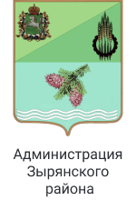
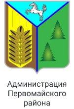
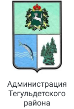
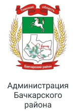
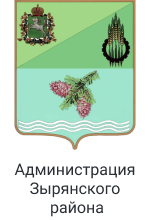
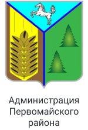
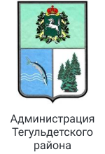

Практически половина населения Томской области проживает в сельской местности - небольших посёлках и деревнях, которые чаще всего характеризуются низкой концентрацией творческих и культурных инициатив, отсутствием туристически привлекательных объектов и событий, а также достаточно низким уровнем качества жизни населения.
«Сибирская Не_провинция» - это комплексная программа обучения, профориентации и получения практического опыта в области креативных индустрий, в том числе туристской деятельности для учащихся сельских школ Томской области.
Участники проекта при поддержке профильных специалистов смогут создать и реализовать в жизнь свой творческий проект. Мы считаем, что через создание и развитие креативных проектов школьники смогут по-настоящему прочувствовать ценность своей малой родины, её многогранность, потенциал для развития, в том числе для собственного развития на данной территории. Кроме того, проведение творческих мероприятий и реализация творческих продуктов позволит повысить и качество жизни внутри территории, создать и поддержать правильные постулаты любви и уважения к своему Дому.
Проект реализуется с июня

Проект реализуется в следующих районах Томской области: город Томск, Асиновский, Бачкарский, Зырянский, Первомайский, Тегульдетский
- Жуков Евгений - основатель томского продюсерского объединения CAST Production, один из создателей томского сериала «Соцсети», продюсер, режиссер, организатор кинофестивалей, автор социальных проектов, член ТО РГО
- Кондаков Пётр - заслуженный работник культуры, сотрудник томского филиала ВГТРК, член Совета ТО РГО, руководитель информационного направления
- Ромашова Татьяна - канд. геогр. наук, доцент ТГУ, член Совета ТО РГО, руководитель географического направления, автор учебно-методических пособий по географии Томской области
- Антошкина Ольга - директор Федерального государственного бюджетного учреждения «Государственный природный заповедник «Васюганский», член Совета ТО РГО
- Татьянин Геннадий - канд. геол.-минерал. наук, доцент ТГУ, член Совета ТО РГО
- Гуренкова Елена - учитель информатики высшей квалификационной категории, лауреат премии Томской области в сфере образования, науки, здравоохранения и культуры
- Иващенко Константин - видеограф, член ТО РГО
- Мальцева Мария - член Совета ТО РГО, руководитель проектного направления, автор региональных социальных проектов
- Барашкова Диана - руководитель Молодёжного клуба ТО РГО «Компас», фотограф, видеограф
- Зинченко Нина - методист ИМЦ по географии, член ТО РГО
- Пикалова Лилия - директор IT-академии ООО "Спутник"
- Трушина Анастасия - помощник исполнительного директора Томского отделения РГО, эколог
- Косихина Анна - специалист по информационному продвижению
- Хромых Вадим - заведующий кафедрой географии ТГУ
- Лисовская Наталья - историк, архитектор, экскурсовод
- Боровиков Дмитрий - мотопутешественник
- Филандышева Лариса - доцент кафедры краеведения и туризма ТГУ
- Волков Ярослав - член ТО РГО, видеограф, технический специалист
- Белозёров Олег - заместитель начальника Департамента образования г. Томска
- Яковенко Валентина - эксперт-географ

 






